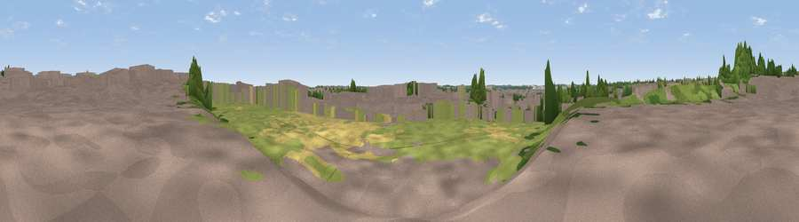

Viewpoint near Yaxley
#45329 in England · top 85% of its area beats it · near YaxleyWhere it is
The exact computed spot (TL 17894 94867). Click the marker for map links.
The view, rendered

A 360° render of this exact spot computed from the terrain model, tree cover and land cover — summer colours, afternoon light, calibrated against photographs of famous viewpoints. Real trees, hedges and buildings will differ in detail.
The panorama
Grey silhouette: terrain skyline in each direction (720 bearings, Earth curvature and refraction included). Dashed green: skyline with trees (+15 m) and buildings (+8 m) as obstacles. Blue strip: how far the ground is visible on each bearing.
Where the view opens
Wedge length = distance to the farthest visible ground on that bearing (vegetation-aware). Rings at 10, 25 and 50 km.
What fills the view
38% built-up · 31% grassland · 18% woodland · 11% cropland ·
Angular shares of the visible panorama (visual magnitude), not map area. Landscape diversity 0.60 (0–1 Shannon).
Key numbers
More beautiful places nearby
The staircase of upgrades: each row has a higher view potential than everything closer. Driving times are estimates from straight-line distance, calibrated against real road routing — check an actual route before setting out.
| Place | Direction | Drive | Score |
|---|---|---|---|
| Viewpoint near Alwalton | NW · 5 km | ~10 min | 22.2 |
| Viewpoint near Chesterton | W · 5 km | ~11 min | 43.0 |
| Viewpoint near Duddington | WNW · 18 km | ~30 min | 43.8 |
| Viewpoint near Toft | NNW · 24 km | ~40 min | 49.0 |
| Viewpoint near East Norton | W · 40 km | ~60 min | 53.2 |
| Robin-a-Tiptoe Hill | WNW · 41 km | ~61 min | 54.6 |
| Whatborough Hill | WNW · 43 km | ~62 min | 57.1 |
| Viewpoint near Pickwell | WNW · 44 km | ~64 min | 57.3 |
52.53891, -0.26315 · source: osm viewpoint · position refined by local search. Computed location — check access rights before visiting.